พระราชกรณียกิจ
ด้านพัฒนาชุมชนและการเกษตร
main.jpg
ขนาดแนะนำ: 600 x 850 px (แนวตั้ง/ทรงยืน)
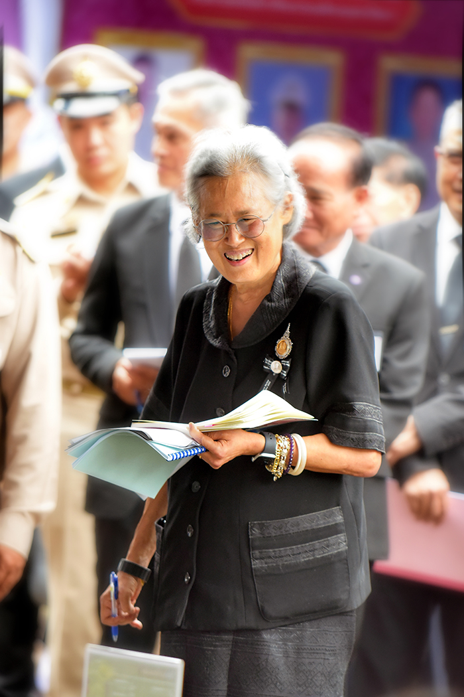
img1.jpgขนาดแนะนำ: 550 x 380 px
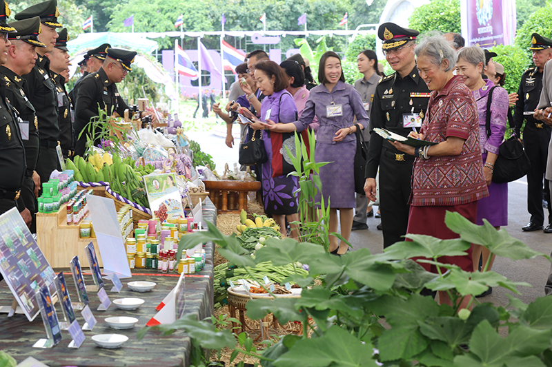
img2.jpgขนาดแนะนำ: 550 x 380 px
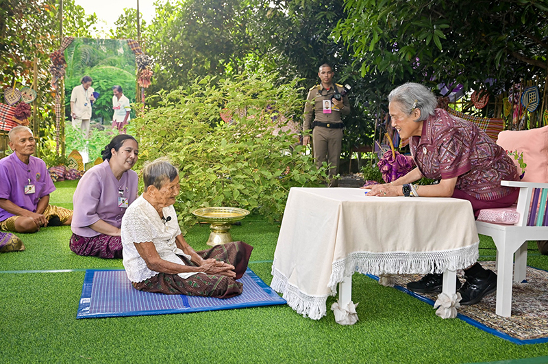
“… ถ้าเราจะเริ่มโครงการใด เช่น บอกให้เกษตรกรปลูกพืชหรือเลี้ยงสัตว์ชนิดใด ย่อมมีความเสี่ยงมากมาย อาทิ ภูมิอากาศอาจแปรปรวน เกษตรกรจึงเสี่ยงต่อการ ล้มละลายและมีความเดือดร้อนตามมา โดยที่หน่วยงานเอกชนหรือรัฐที่แนะนำให้เขาปลูก ยังไม่ต้องรับผิดชอบในช่วงนี้ ดังนั้นการทดลองนำร่องจนเรามั่นใจว่างานนั้นทำได้จริง จึงนับว่าเป็นการจัดการความเสี่ยงอย่างหนึ่ง”
พระราชดำรัสในการประชุมแห่งองค์การสหประชาชาติ ว่าด้วยการค้าและการพัฒนา (อังค์ถัด)
ครั้งที่ ๑๒ การประชุมโต๊ะกลมระดับสูง (United Nations High-Level Roundtable)
ณ กรุงอักกรา สาธารณรัฐกานา แอฟริกา
วันพฤหัสบดีที่ ๒๔ เมษายน พ.ศ. ๒๕๕๑
img3.jpgขนาดแนะนำ: 550 x 380 px
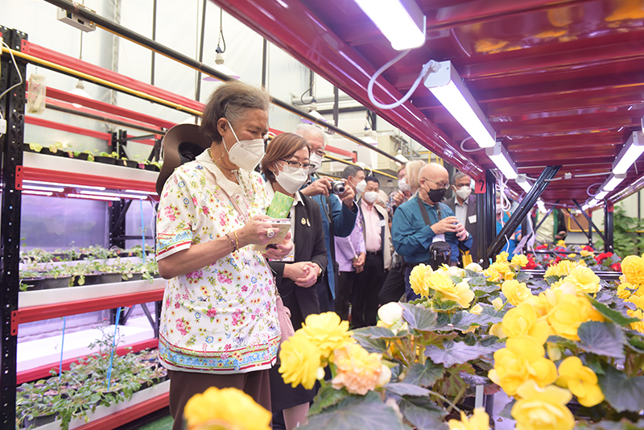
img4.jpgขนาดแนะนำ: 550 x 380 px
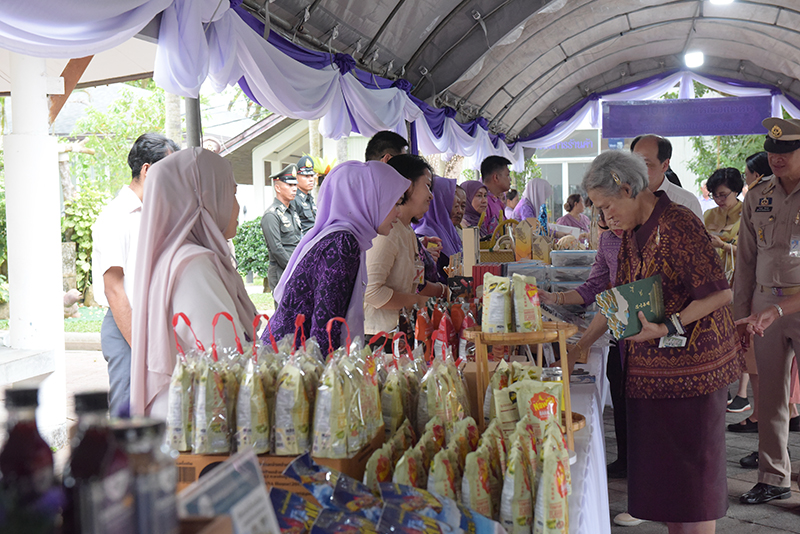
ด้วยทรงตระหนักว่า การลงทุนศึกษาทดลองเพื่อสร้างอาชีพและผลผลิตใหม่ ๆ จากการทำเกษตรมีความเสี่ยงหลายประการเป็นข้อจำกัดให้เกษตรกรในพื้นที่ห่างไกล ทุรกันดารไม่กล้าปรับเปลี่ยนกระบวนการเพาะปลูก เพิ่มชนิดพืชพรรณใหม่ ๆ หรือเพิ่ม ปริมาณผลผลิตให้สอดคล้องกับความต้องการของตลาดเพื่อเพิ่มรายได้ ในขณะที่ การใช้ชีวิตในวิถีเดิมไม่สามารถเลี้ยงชีพได้เพราะผลผลิตไม่เป็นที่ต้องการของตลาด หรือไม่เพียงพอสำหรับการบริโภคในชุมชน จึงมีพระราชดำริให้จัดตั้งโครงการต่าง ๆ เพื่อส่งเสริมความรู้ทางการเกษตรที่ถูกต้องเหมาะสม ทั้งด้านกระบวนการเพาะปลูกและ พันธุ์พืชใหม่ ๆ เพื่อให้ราษฎรเห็นว่าทำได้จริง มีผลสำเร็จ เช่น ...
img5.jpgขนาดแนะนำ: 550 x 380 px
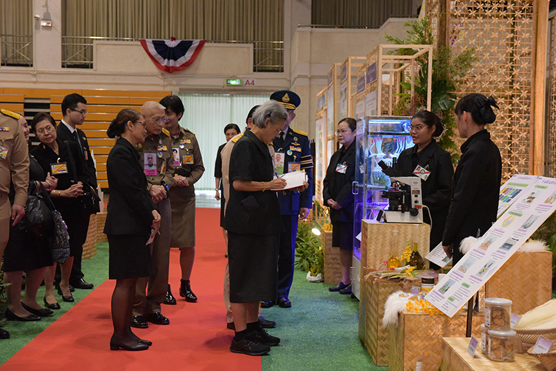
img6.jpgขนาดแนะนำ: 550 x 380 px
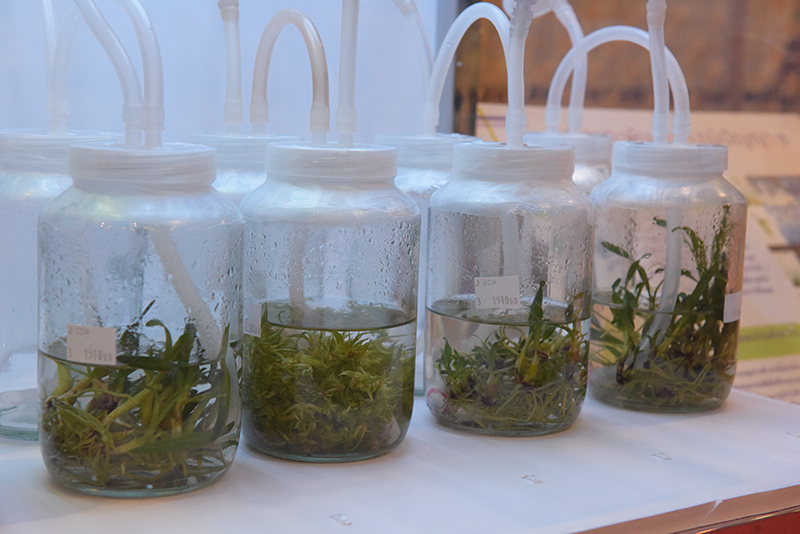
พ.ศ. ๒๕๓๕ โครงการอนุรักษ์พันธุกรรมพืช (อพ.สธ.)
มีพระราชดำริให้ดำเนินการจัดตั้ง โครงการอนุรักษ์พันธุกรรมพืช (อพ.สธ.) และ
ธนาคารพืชพรรณ สำหรับเก็บรักษาพันธุกรรมพืชที่เป็นเมล็ดและเนื้อเยื่อ ขึ้นใน พ.ศ. ๒๕๓๖
เพื่ออนุรักษ์พืชพรรณของประเทศไทย และสนับสนุนงบประมาณให้แก่สถาบันการศึกษา
และหน่วยงานต่าง ๆ ที่เกี่ยวข้องดำเนิน กิจกรรมภายใต้โครงการ โดยมีกรอบการดำเนินงาน
๓ ส่วน คือ การเรียนรู้ การใช้ประโยชน์ และการสร้างจิตสำนึก จนถึงปัจจุบัน โครงการมีการ
จัดทำระบบข้อมูลพันธุกรรมพืชอย่างแพร่หลายสามารถสื่อถึงกันได้ทั่วประเทศ ประชาชนได้รับประโยชน์จากความหลากหลาย และตระหนักถึงความสำคัญของพันธุกรรมพืชต่าง ๆ
ที่มีอยู่ในประเทศไทย เกิดการร่วมคิดร่วมปฏิบัติที่เป็นส่วนสำคัญต่อการพัฒนาอย่างยั่งยืน
พ.ศ. ๒๕๓๘ โครงการกลุ่มอาชีพประชาชนในถิ่นทุรกันดาร
ให้จัดตั้งโครงการส่งเสริมอาชีพ เพื่อให้ประชาชนในพื้นที่ทุรกันดารได้มีอาชีพ มีรายได้
ให้ครอบครัวพึ่งตนเองได้ และมีความเป็นอยู่ให้ดีขึ้น เกิดชุมชนที่เข้มแข็งยั่งยืน รวมกลุ่มกันเกิดเป็น “กลุ่มอาชีพประชาชนในถิ่นทุรกันดารตามพระราชดำริ” พระราชทานเงินให้เป็น
กองทุนของกลุ่ม พระราชทานเครื่องมือ วัสดุอุปกรณ์ ก่อสร้างอาคารและจัดหาครูฝึกอบรมเพิ่มทักษะฝีมือและคุณภาพของผลิตภัณฑ์ ปัจจุบันมีกลุ่มอาชีพประชาชนใน
ถิ่นทุรกันดารกระจายอยู่ในพื้นที่โครงการตามพระราชดำริอื่น ๆ ครอบคลุมทุกภาคของประเทศ
img7.jpgขนาดแนะนำ: 550 x 380 px
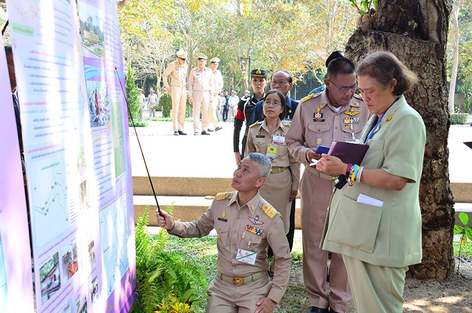
img8.jpgขนาดแนะนำ: 550 x 380 px
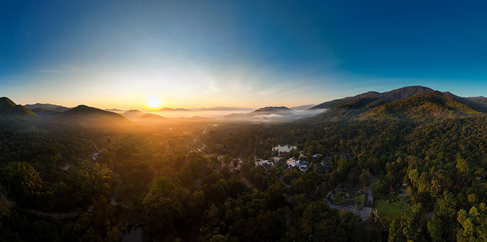
พ.ศ. ๒๕๓๘ อุทยานธรรมชาติวิทยาอันเนื่องมาจากพระราชดำริ จังหวัดราชบุรี
ให้จัดตั้งโครงการส่งเสริมอาชีพ เพื่อให้ประชาชนในพื้นที่ทุรกันดารได้มีอาชีพ มีรายได้
จากการเสด็จพระราชดำเนินไปทรงติดตามความก้าวหน้าโครงการพัฒนาเด็กและเยาวชนในพื้นที่ทุรกันดารหลายครั้ง ทรงพบว่าพื้นที่สุดเขตแดนด้านตะวันตกของอำเภอสวนผึ้ง จังหวัดราชบุรี เป็นเทือกเขาตะนาวศรี ซึ่งเป็นพรมแดนธรรมชาติระหว่างไทยกับเมียนมา มีความหลากหลายทางกายภาพและชีวภาพ อีกทั้งพื้นที่ดังกล่าวอยู่ไม่ไกล
จากกรุงเทพมหานคร จึงมีพระราชดำริให้ดำเนินโครงการอุทยานธรรมชาติวิทยาขึ้นเพื่อเป็น
แหล่งเรียนรู้สภาพธรรมชาติวิทยาสำหรับเยาวชนและประชาชน
img9.jpgขนาดแนะนำ: 550 x 380 px
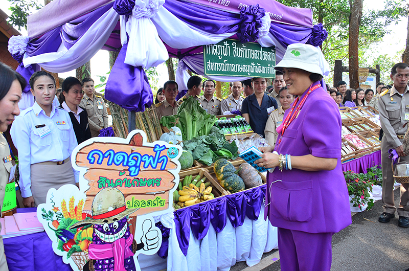
img10.jpgขนาดแนะนำ: 550 x 380 px
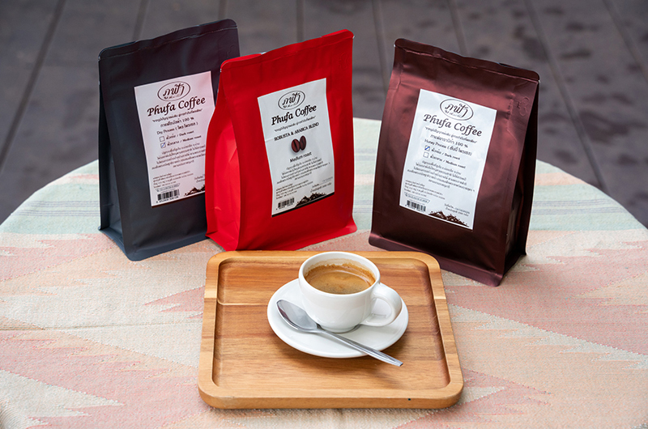
พ.ศ. ๒๕๔๒ ศูนย์ภูฟ้าพัฒนาอันเนื่องมาจากพระราชดำริ จังหวัดน่าน
อำเภอบ่อเกลือ อยู่ในพื้นที่ภูเขาสูง พื้นที่เพาะปลูกเป็นไหล่เขาลาดชันและผ่านการทําการ
เกษตรอย่างไม่เหมาะสมส่งผลให้ป่าไม้ น้ำ และดิน เสื่อมโทรมลง ทำให้ผลิตข้าวไม่เพียงพอ
ต่อการบริโภคและไม่มีอาชีพเสริมที่จะสร้างรายได้ให้แก่ครอบครัว มีพระราชดำริให้ตั้งศูนย์ภูฟ้าพัฒนาขึ้นเพื่อส่งเสริมให้ประชาชนในพื้นที่สามารถผลิตอาหารได้เพียงพอ
ต่อการบริโภค มีรายได้ และมีคุณภาพชีวิตที่ดีขึ้น พร้อม ๆ กับการฟื้นฟูป่าและชุมชน
พ.ศ. ๒๕๕๑ ศูนย์เรียนรู้การพัฒนาอมก๋อยอันเนื่องมาจากพระราชดำริ จังหวัดเชียงใหม่
อำเภออมก๋อยเป็นภูเขาสลับซับซ้อนต้นกำเนิดของแม่น้ำลำธาร แต่ทุรกันดารรถเข้าไม่ถึง
ทำให้เด็กขาดโอกาสทางการศึกษา ประชาชนยากลำบาก จึงทรงให้นำโครงการพัฒนาเด็ก
และเยาวชนมาดำเนินการในศูนย์การเรียนชุมชนชาวไทยภูเขา “แม่ฟ้าหลวง” อำเภออมก๋อย ใน พ.ศ. ๒๕๔๑ เพื่อให้เด็กได้รับโอกาสในการศึกษาและพัฒนาสภาพพื้นที่ชุมชน และมีพระราชดำริให้รวมกลุ่มกันทอผ้ากะเหรี่ยงเป็นอาชีพสร้างรายได้ให้ครอบครัว สร้างความเจริญให้ชุมชนเป็นลำดับ
พ.ศ. ๒๕๕๖ โครงการสร้างป่า สร้างรายได้
มีพระราชดำริให้จัดตั้ง “โครงการสร้างป่า สร้างรายได้” จากโครงการนำร่องในพื้นที่จังหวัดน่าน และจังหวัดเลย แล้วขยายไปยังจังหวัดเชียงใหม่, แม่ฮ่องสอน และตาก พระราชทานวิธีอนุรักษ์และฟื้นฟูป่าไม้ผสมผสานกับการปลูกพืชเกษตร หรือไม้เศรษฐกิจตามลำดับชั้นเรือนยอด เกิดความอุดมสมบูรณ์เป็นแหล่งอาหารและแหล่งรายได้ที่ยั่งยืน